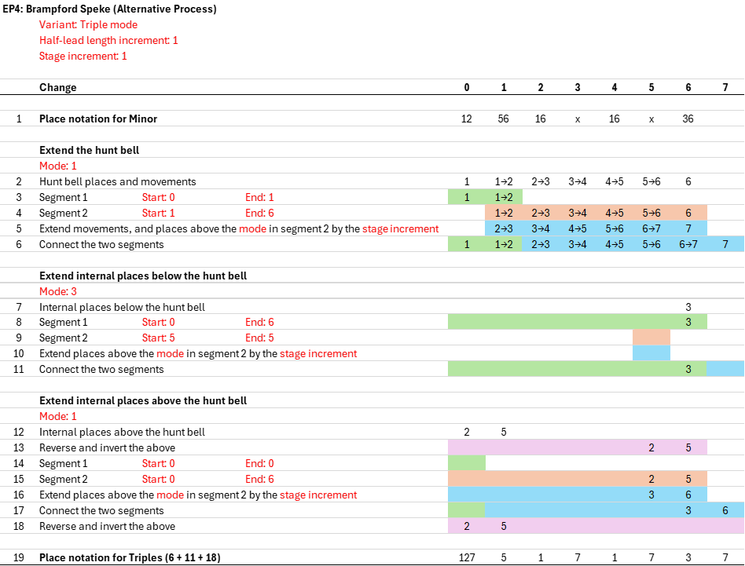

Appendix D cont. Method Extension Processes (DRAFT ONLY)
4 a)
Extension Process 4 - Introduction
EP4 replaces the former EP1 and EP3 extension processes, and also enables a greater range of extensions beyond those provided by EP1 and EP3. It produces extensions that can both keep the lead length fixed (replacing EP1), and expand the lead length (replacing EP3). EP4 can also contract a parent method to lower stages. In addition, EP4 can produce extensions that are a single stage higher, as well as the more common scenario of producing extensions that are an even number of stages (usually two) higher.
There are three variants of EP4: single mode, double mode, and triple mode. These are described below, and examples are provided further below for each one.
- In a single mode extension, a method's places are extended together, without any further separation, in a single process.
- In a double mode extension, a method's places are separated into below-the-hunt places and above-the hunt places, with each subset extended separately. Double mode extension relies on the hunt bell having a path for which the extended path is obvious, such as with Plain and Treble Dodging methods.
- In a triple mode extension, a method's places are separated into hunt bell places, below-the-hunt places, and above-the hunt places, with each subset extended separately. Triple mode extension is used when the extension of the hunt bell path isn't obvious and needs to be specified, such as with Alliance and Treble Place methods.
The ability to use different modes simplifies the extension process for some methods, and supports a wider range of extensions in other cases. The above variants of EP4 are all described below. It will be seen that EP4 in all variants uses the same core process to generate extensions.
In addition to mode, there are two other key parameters to specify when using EP4:
- Half-lead length increment: This specifies the increase in the half-lead length of the extension versus the parent, and is zero (giving a fixed lead length extension), a positive integer (where the extension has an expanded lead length), or a negative integer (used in contraction).
- Stage increment: This specifies the increase in the stage of the extension versus the parent, and is a positive integer, except that in contraction it is a negative integer.
4 b)
Extension Process 4 - Single Mode, Fixed Lead Length
The diagram below shows EP4 used in single mode with a fixed lead length to extend Stedman Doubles. Further details are provided after the diagram.

As will be seen below, EP4 usually works by specifying two overlapping segments of place notation (segment 1 and segement 2). But when the lead length is fixed, no overlap is required. Segment 1 is therefore not used, and all the place notation is included in segment 2.
The places in line 4 above either remain unchanged in line 5 if they are less than or equal to the mode, or they increase by the stage increment if they are greater than the mode. Since the mode in this example is 3, we see that all the places in line 5 are the same as line 4, except that 5th's place in line 4 becomes 7th's place in line 5.
EP4 in single mode with a fixed lead length can be used for Principles and Little methods. It can't be used for Hunters with non-Little paths. But note that Principles and Little methods can also be extended on an expanding lead length basis.
4 c)
Extension Process 4 - Single Mode, Expanding Lead Length
The diagram below shows EP4 used in single mode with an expanding lead length to extend St Clement's College Bob Minor. Further details are provided after the diagram.

This example shows the overlapping segments in use. The first step is to list the place notation for a half lead of the method (line 1). By convention, the lead end change is shown first, and is labelled as change 0. The subsequent changes for a half-lead are then shown and are labelled as changes 1 to n, where n is half the lead length.
The next step is to separate the place notation into two overlapping segements, as specified by the Overlap start and Overlap length parameters. This gives segements 1 and 2, as shown in lines 2 and 3 above, and we then connect these two segments as shown in line 4. Different extensions can be produced by selecting different overlap start parameters. The overlap length must be consistent with the half-lead length increment parameter.
Finally, the relevant places are extended. Since the mode is 3, the places in line 5 are the same as line 4 if they are 3rd's place or lower, otherwise they are 2 places higher.
4 d)
Extension Process 4 - Double Mode
The diagram below shows EP4 used in double mode to extend Cambridge Surprise Minor. Further details are provided after the diagram.

In a double mode extension, the place notation is separated into places below the hunt bell and places above the hunt bell. Each of these subsets is then processed in a similar manner to the previous example, but with two differences:
- In a single mode extension, the place notation is extended after the two segments are connected. But in a double mode extension (and also triple mode), only the places in segment 2 are extended. The extension of the places therefore occurs before the two segments are connected, as can be seen in lines 4, 5 and 6 above.
- When extending the places above the hunt bell, the first step is to reverse and invert the places (see line 8 above). This restates the places on a basis that is equivalent to places below the hunt bell, such that the same process used to extend below-the-hunt places can be used for above-the-hunt places. A final step is then added to reverse and invert the resulting extended places, to convert them back to above-the-hunt places (see line 13).
Double mode is used to extend Hunters where the extension of the hunt bell is obvious, such as with Plain and Treble Dodging methods. This can include Little methods where the hunt bell path has an obvious extension (the extension will be 'less Little', but will still be Little).
4 e)
Extension Process 4 - Triple Mode
The diagram below shows EP4 used in triple mode to extend Nightingale Treble Place Minor. Further details are provided after the diagram.

In a triple mode extension, the place notation is separated into places of the hunt bell, places below the hunt bell, and places above the hunt bell. Each of these subsets is then processed in a similar manner to the previous example.
Triple mode is used to extend Hunters where the extension of the hunt bell isn't obvious, such as with Alliance and Treble Place methods. This can include Little methods where the hunt bell path could be extended in more than one way (the extension will be 'less Little', but will still be Little).
4 f)
Extension Process 4 - Contraction
The diagram below shows EP4 used in double mode to contract Kent Treble Bob Minor. Further details are provided after the diagram.

In most cases, extension can work in both directions. E.g. Kent Treble Bob Minor can be extended to Kent Treble Bob Major, and Kent Treble Bob Major can be contracted with the inverse process to obtain Kent Treble Bob Minor.
4 g)
Extension Process 4 - Single Stage
[Description]
Example
The next EP4 case is single stage extension. The diagram below shows this applied to Brampford Speke Bob Minor. Further details are provided after the diagram.

[Further details]
4 h)
Extension Process 4 - Single Stage - Alternative Process
[Description]
Example
The diagram below shows EP4 applied to Brampford Speke Bob Minor. Further details are provided after the diagram.

[Further details]
4 i)
Extension Process 4 - Additional Considerations
Multiple hunt bells Non palindromic Overlap length is a fraction of the half-lead length increment Requirements for extensions to be valid Jump changes Dynamic methods